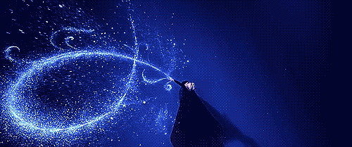
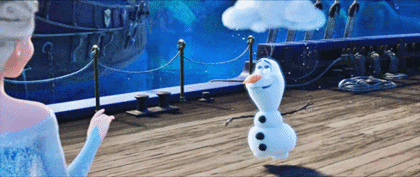

서로가 최고의 친구였던 자매 엘사와 안나.
하지만 언니 ‘엘사’에게는 하나뿐인 동생에게조차 말 못할 비밀이 있다. 모든 것을 얼려버리는 신비로운 힘이 바로 그것.
엘사는 통제할 수 없는 자신의 힘이 두려워 왕국을 떠나고, 얼어버린 왕국의 저주를 풀기 위해 안나는 언니를 찾아 환상적인 여정을 떠난다.
(출처: 네이버 영화)
감독: Chris Buc, Jennifer Michelle Lee
국내 관객수 10,296,101명(국내 상영 애니매이션 역대 1위)
2013년도 10억달러 돌파 영화 $1,276,480,335
2013년도 전 세계 박스오피스 1위
제작비 1억 5천만 달러
개봉 날짜(우리나라 기준): 2014. 1. 16
상영시간 101분
첫번째 영상은 엘사가 처음으로 마법을 자유롭게 쓰는 장면이다. 두번째 영상은 하이라이트는 아니지만 이 영화의 매력덩어리인 캐릭터 올라프를 보여준다.
 디즈니에서 제작한 애니매이션에서 일부 장면에는 미키마우스가 숨어있는 것을 알 수 있는데, 겨울왕국에서도 이 히든 미키를 발견할 수 있다.
미키마우스를 찾는 재미를 위하여 미키마우스가 나타나는 장면은 보여주지 않겠다.
또한, 겨울왕국에는 디즈니의 애니매이션인 라푼젤도 등장하는데 라푼젤도 함께 찾아보기를 바란다.